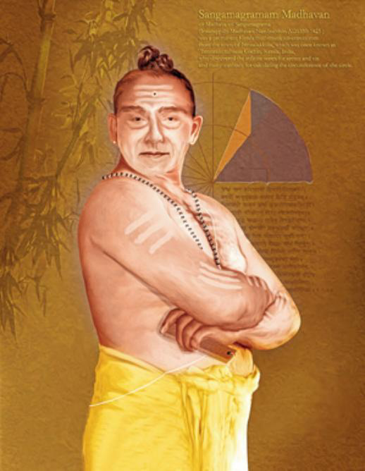

c. 1350–1425
Indian
Series, calculus, trigonometry
Madhava of Sangamagrama, born around 1350 in a small village near modern Kochi in Kerala, is the founder of the Kerala school of astronomy and mathematics — a lineage of scholars who developed key ideas of calculus roughly two centuries before Newton and Leibniz.
None of Madhava's own writings on mathematics survive. His results are known through the works of his successors, especially Nilakantha Somayaji's Tantrasangraha and Jyesthadeva's Yuktibhasa, which carefully attribute the foundational results to Madhava. The most celebrated of these is the infinite series $\frac{\pi}{4} = 1 - \frac{1}{3} + \frac{1}{5} - \frac{1}{7} + \cdots$, now commonly called the Leibniz formula but discovered by Madhava about 250 years earlier.
Madhava also discovered the power series expansions for sine and cosine — what we now call the Maclaurin series — and computed pi to eleven decimal places using his series with correction terms. He understood that his pi series converges very slowly and developed ingenious rational approximations for the tail, effectively inventing convergence acceleration. The Kerala school continued producing original mathematics for over two centuries after his death, though there is no firm evidence that their work reached Europe. Whether their discoveries were transmitted or independently rediscovered remains one of the open questions in the history of mathematics.
| Phase | Page | Referenced for |
|---|---|---|
| Phase 4 | Abel's Theorem | Independent discovery of the Leibniz formula for pi in the 14th century |